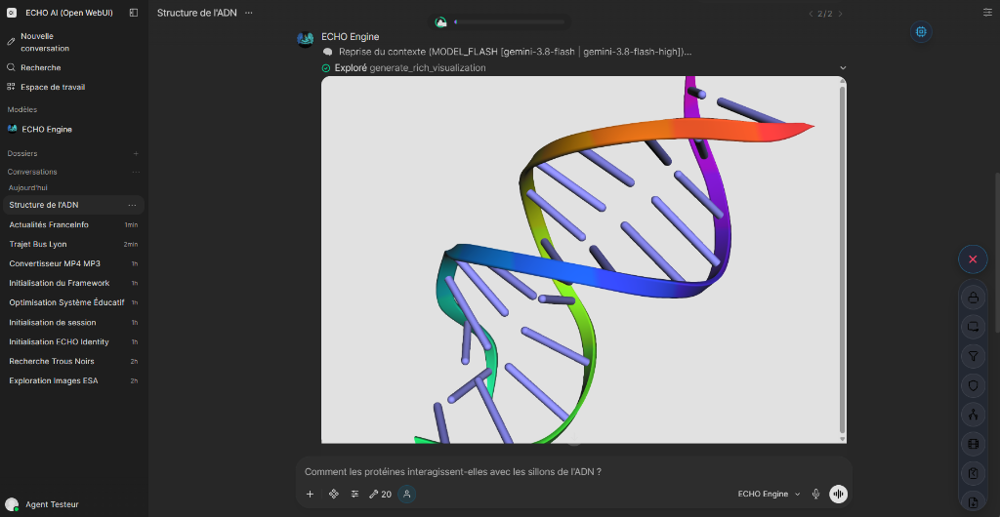
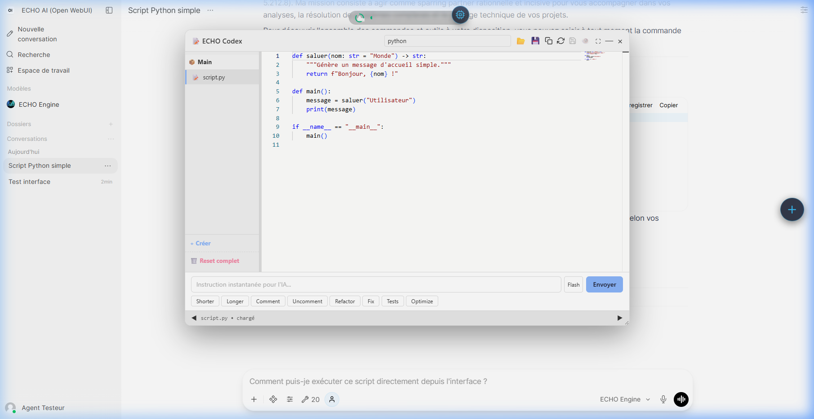

12. Édition & Visuel
Les mots ne suffisent pas toujours pour expliquer un concept ou retravailler un document de grande envergure. ECHO est capable d'enrichir l'interface visuelle de votre écran pour y afficher des diagrammes ou de véritables éditeurs interactifs.
1. Intelligence Visuelle & Studio d'Imagerie Supervisé

Si vous travaillez sur une architecture complexe, une molécule en 3D ou des séries statistiques, demander à l'IA de l'expliquer sous forme de texte brut est souvent limitant. ECHO génère à la place des cartes mentales, des graphes 2D/3D ou des diagrammes interactifs qu'il inspecte et corrige visuellement en coulisses avant même de vous les afficher.
ECHO intègre également un studio de création, de fusion et de retouche d'images supervisé : vous pouvez lui demander de concevoir une illustration sur mesure, de fusionner plusieurs images de référence ou de retoucher un détail précis d'une image existante. Chaque essai est automatiquement vérifié par un contrôleur qualité visuel, conservé dans une galerie interactive (avec zoom tactile sur mobile, copie et export en un clic) et versionné dans votre espace de travail.
2. L'Éditeur ECHO Codex (Texte, Code et Espaces Dédiés)

Le Codex est l'éditeur avancé d'ECHO, organisé en quatre espaces complémentaires :
main pour vos documents et codes sources, plans pour vos feuilles de route stratégiques,
generated pour vos créations graphiques et sandbox pour vos scripts d'exécution.
Lorsqu'il est activé, il se déploie à l'écran comme un véritable logiciel de traitement de texte ou d'édition de code. Il vous offre de multiples avantages :
- Travail à quatre mains : L'IA peut modifier une partie spécifique du texte, et vous pouvez aussitôt cliquer dedans pour corriger une phrase à la main, tout cela dans la même fenêtre.
- Ouverture directe depuis vos messages (
✏️/👁️) : Dès qu'ECHO crée ou modifie un fichier, son nom devient cliquable dans la conversation. Un clic dessus ouvre immédiatement l'éditeur sur le bon fichier ou la bonne révision, sans avoir à chercher dans une arborescence. - Aperçu visuel automatique & Inspection binaire : Les documents mis en forme (Markdown,
pages HTML, feuilles de style CSS, graphiques SVG, PDF et images) s'affichent directement en mode aperçu dès
l'ouverture (bascule instantanée vers le code source via le bouton
👁️), tandis que les fichiers binaires bénéficient d'un éditeur hexadécimal dédié. - Consultation inter-conversations protégée : Un sélecteur vous permet de parcourir les
fichiers créés dans vos autres discussions. Pour vous éviter toute modification accidentelle hors contexte, ces
fichiers externes s'ouvrent automatiquement avec un badge
🔒 Lecture Seule. - Machine à remonter le temps : Le Codex sauvegarde automatiquement l'historique complet de vos versions. Si une modification proposée par l'IA ne vous convient pas, vous pouvez naviguer dans le passé et restaurer la version précédente en un clic.
- Actions rapides : Vous disposez de 8 commandes directes (Raccourcir, Allonger, Commenter, Décommenter, Refactoriser, Corriger, Générer des tests, Optimiser) qui ordonnent à l'IA d'agir sur le bloc de texte ou de code sélectionné, sans avoir à rédiger de consigne dans le chat.
⚙️ Dossier d'Ingénierie & Spécifications
1. Visual Intelligence & Imagerie Supervisée (universal_visual_generator.py v5.233.0.2
&
echo_visuals.py v5.232.3.1)
Le moteur visuel s'appuie sur le pattern Data Island pour produire des visualisations
interactives via 17 moteurs (Mermaid, ECharts 2D/3D-GL, Plotly 2D/3D, 3Dmol.js PDB/CID, Markmap, D3.js,
vis-network, Vega-Lite, Excalidraw, Leaflet) injectées via window.echoRenderVisual, après
validation par une boucle de contrôle qualité multimodal Zéro-Disque
(GEN_SCHEMA_MAX_TRIES = 2, pré-rendu EchoUI.build_rich_view_html dans
render_ephemeral_html / POST /render_ephemeral_view et critique
_run_visual_critic sur MODEL_APOLLO avec
response_schema=VisualCriticOutput et garde-fou score >= 6 → APPROVED). Il
intègre également le Sous-Agent Supervisé de Génération, Fusion et Retouche d'Images via
generate_image(prompt, aspect_ratio="1:1", input_images=None, sub_sid=None) et
close_image_session(sub_sid) : fil multimodal dlg_img_<hex8> dans
cognitive_threads, chargement Base64 jusqu'à IMAGE_GEN_MAX_INPUT_IMAGES = 10
images
de référence via load_image_as_base64, boucle MODEL_IMAGE_GEN ↔
_run_visual_critic bornée par GEN_IMG_MAX_TRIES = 3, nom court
< 15 caractères (_sanitize_image_short_name) commité séquentiellement dans
l'espace dédié CODEX_WORKSPACE_GENERATED (codex/generated/{filename}) et
restitution
dans EchoUI.image_viewer avec sélecteur de galerie multi-essais.
2. Architecture ECHO Codex Multi-Workspaces & Cross-Chat
L'éditeur Codex repose sur quatre composants synchronisés :
- Le Moteur Git (
echo_codex_git.pyv5.235.4.1) : Surcouche Python pure autour dedulwichgérant quatre espaces de travail déclaratifs (ECHO_CODEX_WORKSPACES:main,plansetgeneratedversionnés sous Git aveccore.autocrlf = falseet parcoursfirst-parentdéterministe, etsandboxnon-versionnée dédiée à l'exécution). Il intègre un contrôle d'état en O(1) (get_latest_state), la résolution universelle des commits (resolve_commitsupportant"HEAD"et les SHA courts), la lecture historique unifiéeread_file_at_commit, l'exclusion précoce des binaires danssearch_in_file/trace_history, le filtrage SSoT des conversations supprimées dewebui.dbdansget_user_codex_chats, filtre les répertoires massifs viaECHO_SYNC_EXCLUDE_LIST(node_modules,.venv, etc.), supporte la lecture/écriture binaire sans perte via transport bijectiflatin-1et retourne(commit_hash, paths_to_rm)lors d'undelete_filepour purger récursivement SQLite. - L'Interface HUD & Action (
echo_codex_ui.pyv5.232.5.1 &echo_codex_action.pyv5.235.4.1) : Injection de Monaco Editor (propulsé par le Window Manager UCTP/SSE/RPC), avec sérialisation JSON intégrale des variables JS (activeChatTitle), pré-chargement atomique deinitial_contentàt = 0ms, export direct côté client sans aller-retour RPC (window.echoTriggerDownload) et exemption de watchdog (noWatchdogActions), aperçu multi-format (Markdown viamarked.jschargé en isolation CommonJS UMD, HTML Sandboxed Iframe, CSS Palette & Typography Inspector, SVG Zoom/Pan, Images avec copie presse-papierswindow.echoExportImageet PDF WYSIWYG) activé par défaut (PREVIEW_REGISTRY) et rafraîchi automatiquement lors de la navigation dans l'historique Git (echoCodexLoadVersion), Éditeur Hexadécimal Binaire, sélecteur de conversation Cross-Chat (actionsswitch_chatetswitch_workspace) verrouillant l'interface en lecture seule (isReadOnly/isWorkspaceReadOnly) lorsqueactiveChatId !== CIDou sur les espaces protégésplansetgenerated, et verrou logiciel anti-Race Condition à la sauvegarde. - L'Outil LLM (
echo_codex_tool.pyv5.235.5.1) : Protégé par le verrou partagéget_codex_lock(uid, cid)et déporté hors de l'Event Loop viaasyncio.to_thread, il expose 11 primitives d'édition, d'exploration inter-conversations et de voyage temporel (create_codex,read_codexavec omission sécurisée des binaires sans déversement brut,edit_codexdoté d'un contrôle de concurrence optimiste SHA-256original_shaen Mode 2assisted_editionprévenant tout écrasement concurrent Lost Update,delete_codex,list_codex,list_other_chats_idsavec compteursMain/Plans/Generated/Sandbox,search_codexincluant le modetrace_history,history_codex,restore_codex,summarize_codexexécuté surMODEL_APOLLOavecthinking="medium"etmaxOutputTokens: 8192, etopen_codex_uisupportanttarget_chat_idetcommit_hash) tout en interdisant les mutations génériques surplansetgenerated(is_codex_workspace_generic_writable). Chaque opération arme en début d'appel une directive URN (_emit_urn_directiveviastate.has_pending_directive) guidant le modèle vers la syntaxe[nom_du_fichier](codex:scope:workspace/chemin). - Le Filtre de Liens Interactifs (
codex_links_filter.pyv5.231.55.1, priorité 80) : Vérifie l'existence physique viacheck_codex_file_exists(echo_paths.pyv5.235.5.2), transforme en Outlet les URNs en ancres#codex:...interceptées parwindow.echoOpenCodex(avec isolation stricte des HUDs parqués multi-chats et neutralisation des liens vers des fichiers inexistants), puis les restaure bijectivement en Inlet pour préserver le hash d'invariant de Suture.